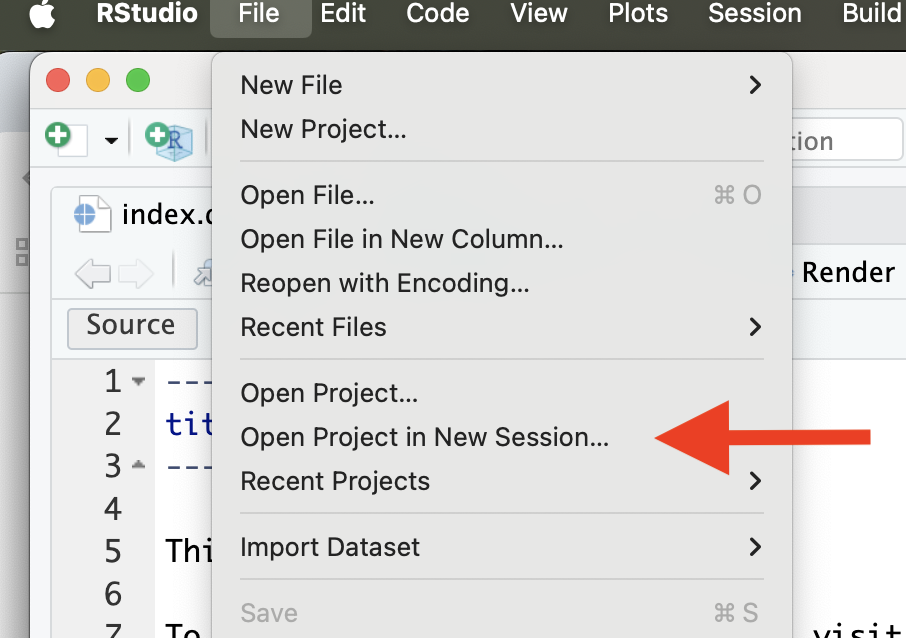

There are no required readings for today, but if you did not join our lecture last Thursday, please read through the lecture notes and watch the recording posted on Canvas
Collaborating on GitHub:
Tutorials on making websites with GitHub pages:
Check out the video and other tutorials directly at GitHub Pages
There are many additional details available in the Quarto Documentation
Today’s lesson borrows from the excellent tutorial Creating your personal website using Quarto by Sam Shanny-Csik
feedback channel on Slack
We will continue practicing how to collaborate on a GitHub repo - now while setting up a free website through GitHub Pages! Because we may not have both partners from all the pairs we formed last week with us today, we will form new pairs and start over with setting up a new shared repo that both partners will each clone to their local computers. It’s good to keep practicing that setup, and we’ll quickly get back to where we left off.
Like last class, we will focus on the simplest way to collaborate on GitHub by both partners having full write access to the repo. There are many ways to improve this workflow once you get more comfortable, but this is a good place to start.
By the end of today’s class, you should be able to:
.Rproj and
.gitignore files they create when initially cloning their
repo before Partner 2 clones. In this case, Partner 2 will create these
files on their computer so you will have two different copies and get
merge conflicts
If you get stuck with git error messages that you can’t make sense of or resolve, “a highly inelegant, but effective technique for disaster recovery” (in Jenny Bryan’s words) is to burn it all down and clone a fresh copy of your repo.
There are several different ways we can set up a website with Quarto. To keep practicing the workflow we used during last class, we’ll here use a “GitHub first” approach. Later on, you can try on your own to set up a similar project using an RStudio project first approach, e.g. following this tutorial [and you can read more about the differences between the two approaches in Chapters 15-17 in Happy Git with R]
Today, we also want to keep practicing collaboration, so we’ll again split into teams. Because everyone will have a new partner today, we’ll practice one more time how to
When you get paired up, decide who will be Partner 1 and Partner 2.
Partner 1 starts by creating a repo. You can call it
collab-website. Add Partner 2 as a collaborator, as
described in giving
your partner privileges section from Lesson 4.
Now, both of you should clone the collaborative repo to your local machines (check Lesson 4 if you need a reminder of how to do this).
NOTE: Make sure Partner 2 doesn’t clone the repo until
Partner 1 has pushed their .RProj file to avoid merge
conflicts here.
Now it’s going to get fun. Let’s start by making a super simple website. Quarto has built-in functionality to create all the basic files we need for a simple website. Unfortunately, there is no way to access that functionality through point-and-click in the RStudio GUI or a single command in the R Console (since Quarto is fundamentally a command-line tool). So instead we will have to run the command in the Terminal tab (in the bottom left left) [i.e. NOT in the Console tab]
In the Terminal tab, have Partner 2 type and run the following command:
quarto create-project --type website
[only Partner 2 should do this]
This adds the the default files (_quarto.yml,
index.qmd, about.qmd, and
styles.css) that we need for getting started on our
website.
Check to see if a Build tab now shows up in your top right pane:
If not, try closing your RStudio Project and re-open it (e.g. by clicking File -> Open Project in New Session)

That should bring up the Build pane, so you can click Render Website
This will render our very basic, but functional website. It should pop up in your Viewer tab in the bottom left pane, and you can open it in a browser by clicking the “show in new window” icon.
After you have previewed your website, have Partner 2 push the changes to Github.
There are many ways to publish a Quarto website (more details here). We will use GitHub Pages, which allows you to publish a website from any GitHub repository (for free!). To do so, there are a few configuration steps that we will have Partner 1 set up.
Step 1
Create a file named .nojekyll in your repository’s root
directory (e.g. collab-website/), which is required to
disable some processing of HTML files that GitHub does by default. From
RStudio’s Files pane, click New File > Text File, then type .nojekyll
> click OK (you can use the Text File option to create any file
type).
Step 2
Open the _quarto.yml file and edit the header to set the
output directory to a subdirectory named docs [it’s
important that you use exactly this name] by adding the line
output-dir: docs under the project section, so the file
contents will look like this:
project:
type: website
output-dir: docs
website:
title: "collab-website"
navbar:
left:
- href: index.qmd
text: Home
- about.qmd
format:
html:
theme:
- cosmo
- brand
css: styles.css
toc: true
Step 3
Save your changes and render your website again by clicking “Render
Website” under the Build tab in the top right pane. You will see a
docs folder appear, which is where all your rendered .html
(and other important) files will automatically be saved to when you
“Build” your website – that is, when you convert all your .qmd files to
the .html files that your web browser can interpret / display.
Note: your website is currently being hosted by your local machine, not at a searchable URL. We’ll get there soon though!
But first, Partner 1 must stage, commit, and push their changes to GitHub.
main and that the
selected folder is set to /docs. Remember to click
save (on the same line as you chose the main branch as the
source).Your repo is now a website! After a few minutes it will go live and you can see the URL inside a box at the top of the page (you may have to try refreshing a few times).
We would also have figured out our website’s URL from your GitHub repo’s URL — pay attention to URLs.
ProTip Pay attention to URLs. An unsung skill of the modern analyst is to be able to navigate the internet by keeping an eye on patterns.
Make sure that the Partner who didn’t render the website locally pulls the updated version from GitHub.
Now take turns to edit the contents and looks of your website.
Don’t mess with stuff in the docs/
folder When you render your site, Quarto takes all your .qmd
files, converts them to .html files (along with some other important
stuff), and saves everything to your docs/ folder. Your
site now deploys from this folder, so you really don’t want to mess with
anything in here directly.
Don’t change the name of your index.qmd
file This is the default / expected name given to website
landing / home pages. If you change the name of this file, you risk
breaking your deployment.
index.html (which is built from index.qmd) is the page
people will arrive at when navigating to your website – give this
landing/home page a makeover. Partner 1 can first try to
Update the YAML title in your index.qmd file, e.g. change it to “Our collaborative website”
Delete the sample text and begin adding your own content – a great place to start is a short blurb about what this website is about (e.g. showing pictures of puppies).
Render the website again (it’s important you render again before pushing to GitHub), and then stage, commit, and push.
Both Partners: Go to inspect your rendered website!
Remember the format of the URL. For example:
You can also always find the website by going back to “Setting”, the “Pages” (in the left-hand menu) within your GitHub repo.
Note that it may take a few minutes before your changes become active.. So don’t despair if you don’t see your changes showing up right away. Just double-check that you’ve pushed the rendered site and check back. In the meantime, you can explore your current website content and design in RStudio’s Viewer in the bottom left pane.
The old version of the website may also be stored in your browsers cache, so if it has not updated after 1-2 minutes and you confirm that you’ve pushed your changes to GitHub, trying viewing the url in a different browser or an incognito window.
Get up-to-date Make sure that the Partner who didn’t render the website locally pulls the updated version from GitHub.
_quarto.ymlThe _quarto.yml file is a configuration file – any
document rendered within the project directory will automatically
inherit the metadata defined within this file. Some easy updates can
make a big difference.
Decide who of you will make the following changes, render the website again, and push.
Change your website title, which appears in your browser tab and in the top left corner of your website’s navbar (by default, it’s set to your repository name, which isn’t so pretty – change this!)
Set your page-layout to full so that your page content takes up
more of the page width by adding a page-layout option under
the html format specification
Note that the default toc: true here (in _quarto.yml)
renders a navigation menu on all web pages by default (but you can
override options on a page-by-page basis)
Your updated _quarto.yml file should look like this:
project:
type: website
output-dir: docs
website:
title: "Cool website"
navbar:
left:
- href: index.qmd
text: Home
- about.qmd
- resources.qmd
format:
html:
theme:
- cosmo
- brand
css: styles.css
toc: true
page-layout: fullIn the default Quarto website skeleton, there are two items in the
navbar that appear as “Home” and “About.” Those navbar tabs link to two
.html files (index.html and
about.html) and are automatically rendered when when you
Build to docs/. Adding a new page to your website requires
two steps:
Create a new .qmd file and add any necessary YAML
options, along with any content that you want to appear on that page.
Here, I’m creating a new page titled “All of my favorite resources!” and
saved it to my root directory as resources.qmd.
A quick reminder on how to add new files:
From RStudio’s File pane, click Blank File > Quarto Document > give it a name (e.g. resources.qmd and save it to your project’s root directory
Update _quarto.yml by adding your new
.qmdto the list of navbar pages. My website’s
_quarto.yml file now looks like this:
project:
type: website
output-dir: docs
website:
title: "Cool website"
navbar:
left:
- href: index.qmd
text: Home
- about.qmd
- resources.qmd
format:
html:
theme:
- cosmo
- brand
css: styles.css
toc: true
page-layout: fullRender your website and see that this creates a newly-added navbar page. Note: The page name, as it appears in the navbar of your website, will be the same as whatever is listed in the title field of that file’s YAML. For example, I have set title: “All my favorite resources!” in the YAML of resources.qmd – this is how it will appear in my website’s navbar. If you’d like to set the navbar name as something other than the page’s title, use the href and text options together (e.g. see how index.qmd is rendered as Home in my website’s navbar).
Commit, stage, and push your changes to GitHub and inspect the results.
Update the appearance of your site by choosing from one of the 25
predefined Bootswatch themes. By
default, Quarto sites are built using the cosmo theme. Supply just one
theme name to the theme option in your
_quarto.qmd file:
Try choosing quartz theme
project:
type: website
output-dir: docs
website:
title: "Cool website"
navbar:
left:
- href: index.qmd
text: Home
- about.qmd
- resources.qmd
format:
html:
theme: quartz
css: styles.css
toc: true
page-layout: fullStage, commit, and push your changes.
If you have more time, try changing arranging your landing page (index.qmd) using a pre-built template
Or any other settings described in the Quarto Documentation.
Remember to push and pull frequently, and resolve any merge conflicts that arise.
Today, we’ll just explore the basics, but GitHub pages is a tremendously powerful platform for building beautiful websites with advanced graphic layout and lots of different kinds of functionality.
Here are a few examples:
Another few examples of class websites built with GitHub pages:
https://pjbartlein.github.io/REarthSysSci/index.html
https://p8105.com/index.html
And some personal websites:
https://emitanaka.org/
https://samanthacsik.github.io/
And of course the GitHub Pages site itself
We are now at the end of the GitHub-focused section of the course. You should now be comfortable with using some of the basic functionality of Git and version control and the skills that you have learned - and that we will continue to practice through the rest of the course - may serve all your version control needs for a long time to come.
We have focused on the simplest way to start using GitHub here. Once you really integrate GitHub into your workflow, you may want to learn about more advanced options or special use scenarios. Here, Google is going to be your best friend. You may want to learn about topics like:
One important thing to note is that we have exclusively interacted with Git through RStudio because that provides a really nice interface and integrates well with RMarkdown and other work in R. However, there are some limits to the functionality, so for more advanced usage you will probably have to either use the GitHub Desktop program or interact with Git and GitHub through the command line.
A few good resources for learning about interacting with Git through the command line are:
Have fun exploring!